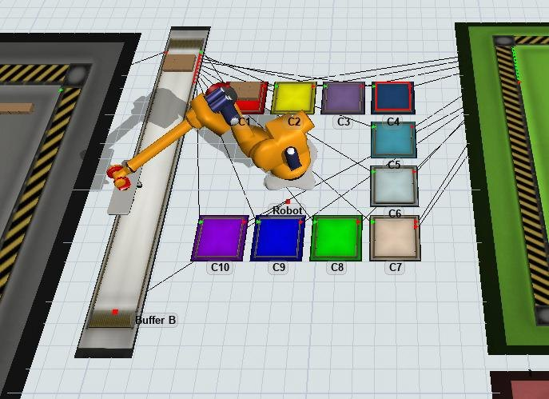
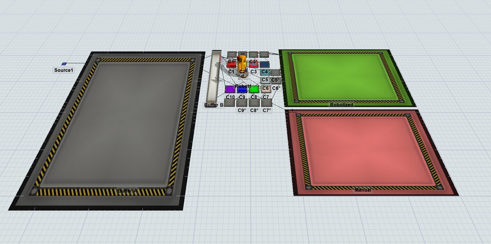
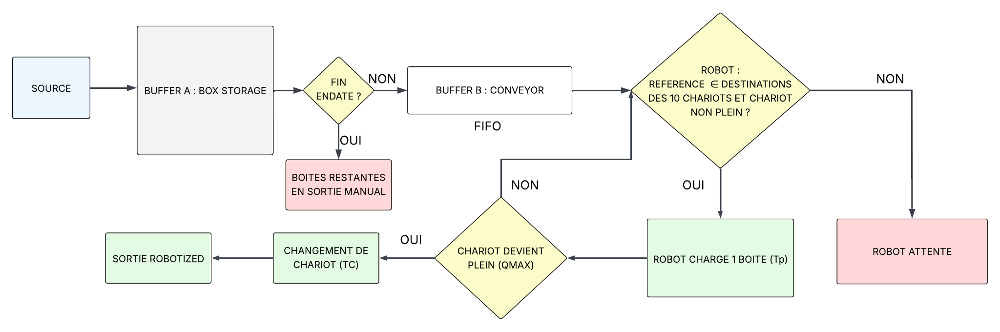
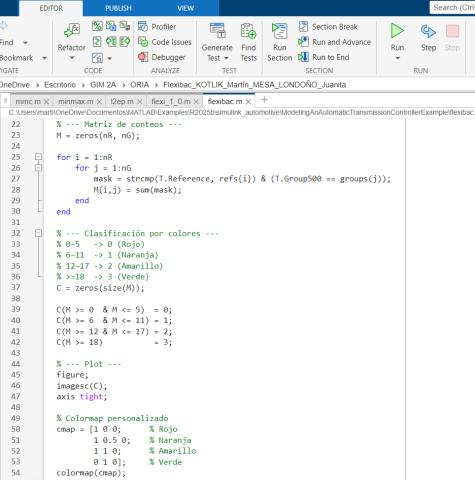
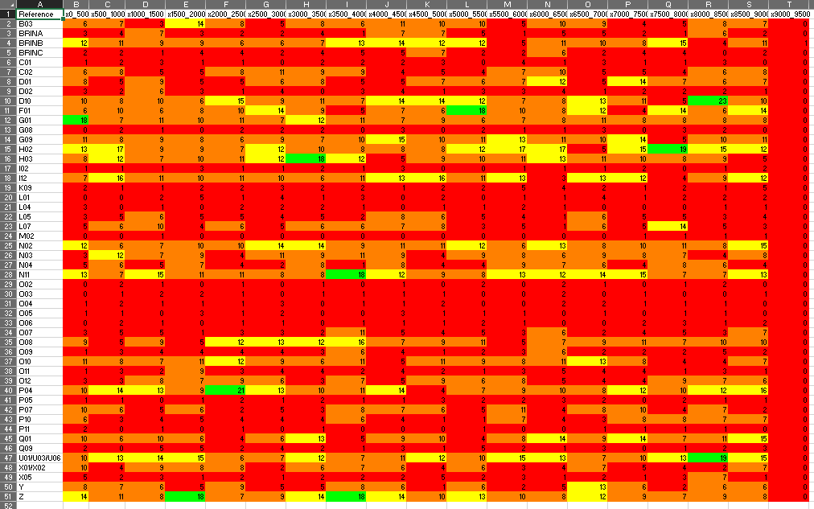

Simulation et optimisation d’un système de tri robotisé
Simulation à événements discrets d’une installation de tri avec deux buffers, un robot et dix chariots de destination.

De l’analyse de données à la simulation industrielle
Analyse d’un jeu d’environ 9 000 produits avec des scripts MATLAB permettant de visualiser la fréquence des destinations, établir des cartes thermiques et définir des règles de priorisation.
Le système devait gérer jusqu’à 250 destinations possibles, avec seulement dix chariots disponibles au niveau du robot.
Développement et analyse d’un modèle FlexSim avec traitement FIFO, allocation de chariots et comparaison du flux manuel et robotisé.
Évaluation de trois scénarios à partir du nombre d’articles traités, de la charge manuelle, du temps d’attente et du taux d’utilisation des chariots.
Modèle, logique et analyse des données
Figures issues du rapport original. Cliquer pour agrandir.







